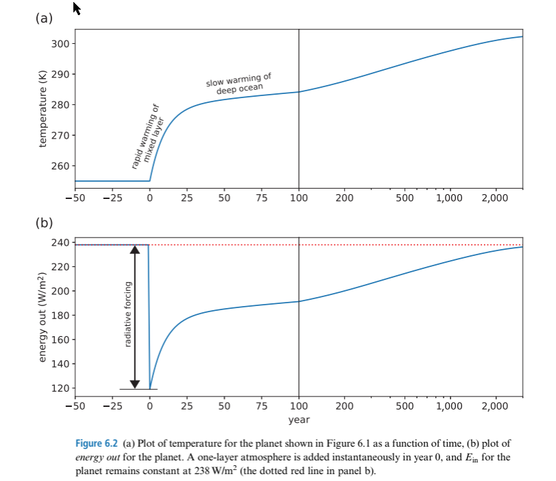
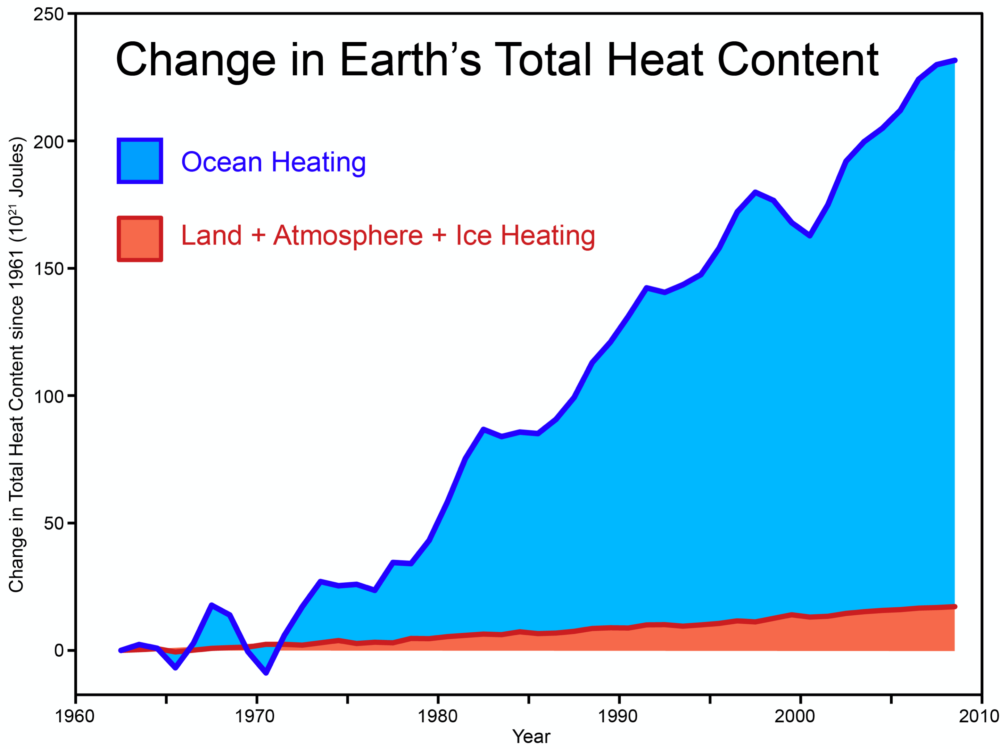

Day 19: Climate timescales for forcing without feedback
Contents
Day 19: Climate timescales for forcing without feedback#
Review#
In the Day 9 reading we used the radiative forcing equation:
to relate the \(CO_2\) concentration to the radiative forcing.
On Day 15 and in the climate sensitivity definitions we linked a forcing \(\Delta F\) from \(CO_2\) or orbital changes to the long-term equilibrum temperature change \(\Delta T\):
The next step is to understand how \(\Delta T\) will change with time, which means that we need to be able to write and solve a stock and flow equation for the energy of the ocean and atmosphere as they are pushed by the greenhouse gas forcing \(\Delta F\). Here’s an example from the textbook: Dessler (3rd edtion) Figure 6.3:
{kind=link}
As the figure shows – on this planet \(\Delta T\) first changes rapidily over about 25 years as the upper 100-200 meters of the ocean warms under the new forcing \(\Delta F\) and then much more slowly as the lower 1 km of the ocean is heated. How is Dessler doing this calculation?
Stock and flow without feedback#
Temperature change in the atmosphere#
On Day 10 we defined the heat capacity for dry air \(c_p=1004\ J/kg\) which links the change in energy to the change in temperature. We can use this to find the stock of energy in the atmosphere: if we know the air density \(\rho_{air}\), then the energy in a thin layer of thickness \(\Delta z\) and temperature \(T\) is going to be:
and the energy of the entire atmosphere is the integral of all these layers:
In addition, if we define the average temperature \(T_{avg}\) then we can write:
where \(M\ (kg\,m^{-2}) = \int_0^\infty \rho_{air} dz\) is the mass of air in a column. You’ve seen this before as Equation (4) on page 3 of assignment 3. Using that same approach to get the value of \(M\) between a surface pressure of 1000 hPa and the top of the atmosphere where the pressure = 0 gives a values for \(M\) of about 10,000 \(kg\,m^{-2}\). \(M\) is a constant, because mass is conserved in the atmosphere, and \(c_p\) is also constant.
If we ignore feedback, then we can write a simple equation for how the stock of energy in the atmosphere responds to a radiative forcing \(\Delta F\):
where \(\Delta\) means the difference between pre-industrial times, when the inflow and outflow were in balance, and modern times, where we have increased greenhouse gasses and thrown the system out of balance.
Using (8) we can rewrite (9) as
Since \(\Delta F\) is constant, this itegrates to
Temperature change in the ocean#
Since the ocean is incompressible, we can calculate \(M_{ocean}\) by just multiplying the density of seawater \(\rho_w\) by the depth of the ocean layer \(D\):
where \(\rho_w = 1030\ kg\,m^{-3}\) for seawater and \(D\) is in meters. Following the same approach that gave us (11) gives:
Note that since \(c_w \approx 4000\ J\,kg^{-1}\,K^{-1}\) and seawater is 1000 times denser than air, the average temperature of even a thin ocean layer changes much more slowly than the atmosphere given the same heating. This is shown in the Figure 2 – the ocean is storing almost all the extra energy that has accumulated since 1963.
{kind=link}
Figure 2: Changes in the Earth’s heat content since 1963. (skepticalscience.com)
Melting an ice sheet#
How much energy does it take to melt the 1 km of ice that used to cover the Pacific NW? We already know from’ day 10 that to change a kg of liquid water into a kg of water vapor takes \(l_v\) = 2.5 \(\times\ 10^{6}\) J/kg, the latent heat of vaporization. Changing 1 kg of ice into 1 kg of liquid takes substantially less energy: the latent heat of melting for water is \(l_{melting}\) = 0.334 \(\times\ 10^{6}\) J/kg. Ice is also less dense than liquid water: \(\rho_{ice}\) = 917 \(kg\,m^{-3}\), and as with the ocean we don’t have to worry about compression, so \(M_{ice} = \rho_{ice} D\), where D is the depth of the ice sheet. That means that if we heat the ice sheet by flux \(\Delta F\) and ask how long it takes to get the energy to turn all of the ice into water, that \(\Delta t\) is given by:
Example problem#
How long does it take a net forcing of 1 \(W\,m^{-2}\) to raise the average temperature of the top 150 m of the ocean by 1 degree?
Put in some numbers: if \(\rho_w\)=1030 \(kg\,m^{-3}\),
\(c_w\)=4000 \(J\,kg^{-1}\,K^{-1}\),
D=150 m, \(\Delta T_{final}\)=1 K, ∆F=1 \(W\,m^{-2}\) then I get:
\(t_{final}\)=618 million seconds, or about 20 years to warm the top of the ocean by 1 degree.
Summary#
Climate forcing is the net change in the radiative flux entering and leaving the top of the Earth’s atmosphere due to processes which are independent from a change in the Earth’s mean temperature.
Solving the stock and flow equation without feedback for air, water and ice give very different timescales for the response to greenhouse warming.
The density and large heat capacity of liquid water make the ocean an enormous reservoir for energy that is being added to the system by global warming. Most of that energy is being absorbed by the top 150 meters of the ocean.